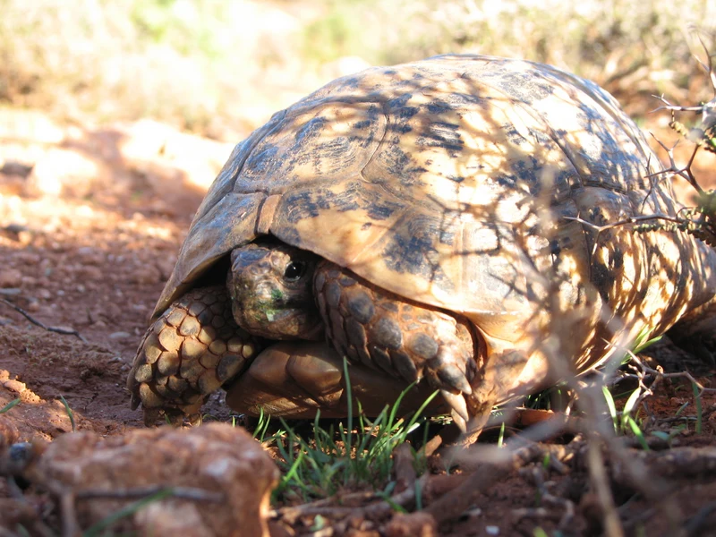

リビア北東部・キレナイカ地方の固有亜種。ギリシャリクガメのなかでも背甲が低く扁平で、明るい色合いになる傾向がある。国内流通はほぼ皆無の、記録目的で掲載する亜種。

飼育下の実例がごく少ない亜種のため、1年後の姿は同じ北アフリカ産亜種からの推定になる。甲長7〜10cm程度に育ち、日光浴と乾いた床材を好む、ギリシャリクガメらしい暮らしぶりになると考えられる。
キレナイカ産の個体は小型で扁平にとどまるとされる。50〜80年の寿命を持つ長期飼育種であることは種全体と変わらず、終生飼育の計画が前提になる。
ギリシャリクガメは亜種分類そのものが研究途上で、産地表示のない個体を写真だけで cyrenaica と断定することはできない。国内流通がほぼ皆無の亜種なので、「リビアギリシャ」として売られている個体に出会っても、産地の裏付けとCITES書類を必ず確認したい。
リビア北東部、地中海に面したキレナイカ地方（ベンガジ〜ダルナ周辺）の乾いた低木地・草地に分布する固有亜種。iNaturalist の Research Grade 観察は北緯32.7度・東経21.9度前後、古代都市キュレネにほど近い一帯で記録されている。世界的にも観察記録が数件しかない、記録の乏しい亜種にあたる。
背甲が低く扁平で、明るい黄褐色の地に暗色斑が入る個体が多いとされます。ギリシャリクガメの亜種のなかでは小型にとどまる傾向があります。ただし亜種の識別は連続変異のため写真だけでは確定できず、産地が最も確実な手がかりです。
← 横にスクロールできます
| 種名 | 甲長 | 難易度 | 必要環境 | 特徴 |
|---|---|---|---|---|
| リビアギリシャリクガメ このページ | 13〜18cm | 中〜上級 | 60〜90cm（成体） | 本亜種 |
| ギリシャリクガメ（種全体） | 15〜25cm | 中〜上級 | 60〜90cm | 本亜種の親種 |
| モロッコギリシャリクガメ | 15〜20cm | 中〜上級 | 60〜90cm（成体） | 基亜種・北アフリカ産 |
| チュニジアギリシャリクガメ | 13〜17cm | 中〜上級 | 60〜90cm | 最小級・冬眠させない |
飼い方は同じ北アフリカ産のモロッコギリシャリクガメ・チュニジアギリシャリクガメに準じます。地中海性気候の出身で夏は乾燥し冬は温和なため、日本では梅雨〜夏の蒸れ対策と、冬眠させない加温管理が基本です。ただし本亜種での長期飼育例はほぼ公表されておらず、ここに書ける確かなことは限られます。分からないことは分からないと明記します。
ギリシャリクガメの亜種分類は研究者の間でも見解が分かれており、cyrenaica を独立亜種として認めない資料もあります。当サイトは iNaturalist の分類（rank=subspecies・有効）と TTWG の亜種アカウントに合わせていますが、これが唯一の見解ではありません。写真からの亜種同定は原理的に困難で、産地の分からない個体を亜種名で断定することは、このサイトでは行いません。
本亜種固有の飼育情報・繁殖情報はほとんど公表されておらず、本ページの飼育数値は近縁亜種からの推定です。和名「リビアギリシャリクガメ」は英名 Libyan Tortoise にもとづく当サイトの表記で、国内で定着した和名ではありません。
飼育温度・湿度などの数値は飼育資料と国内飼育の一般的な目安にもとづきます。確定的な一次資料が乏しい項目は断定していません。